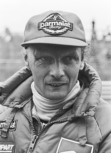

In the name of Niki.
1949-2019
"A race isn't won until it's over."
Andreas Nikolaus Lauda a fost un om de afaceri austriac și pilot de Formula 1, campion mondial în anii 1975, 1977 și 1984.
După prima sa retragere din Formula 1 a fondat linia aeriană Lauda Air, care a devenit în timp una din cele mai mari linii aeriene din lume.

Niki Lauda la marele Grand Prix al Olandei.
Lista curselor la care a concurat:
- 1973 - Marlboro
- 1974 - 1977 - Scuderia Ferrari
- 1978 - 1979 - Parlamat
Citeste mai mult despre Niki pe Wikipedia.